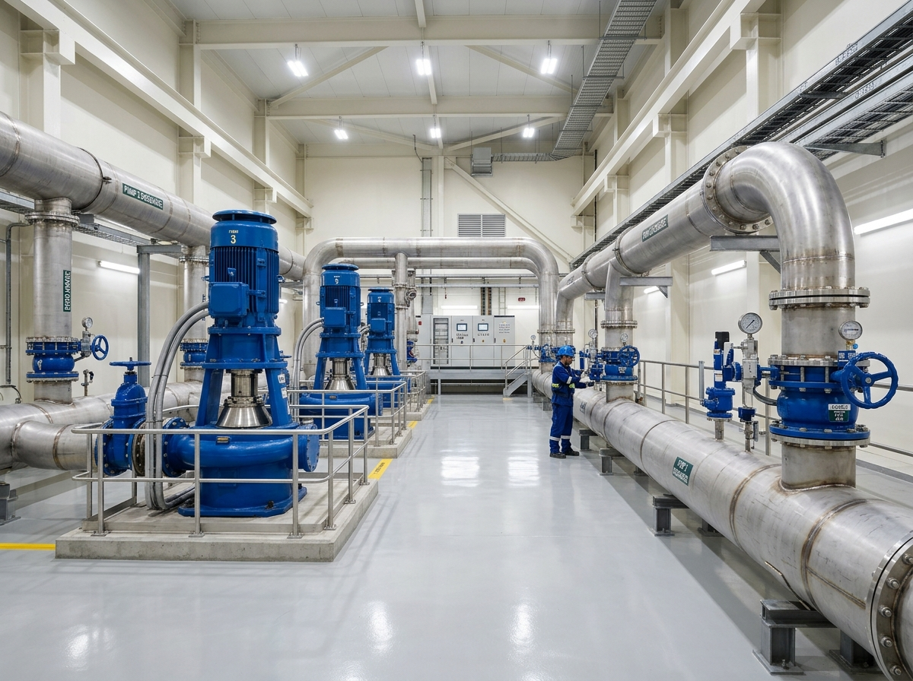
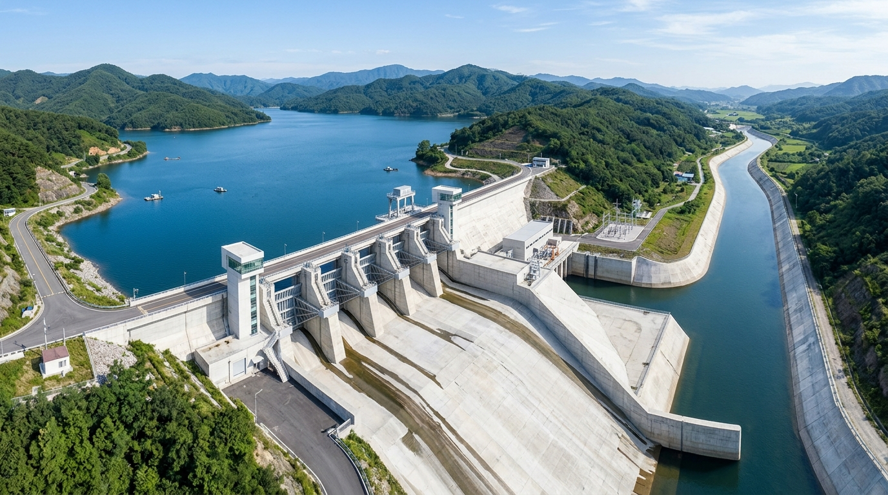
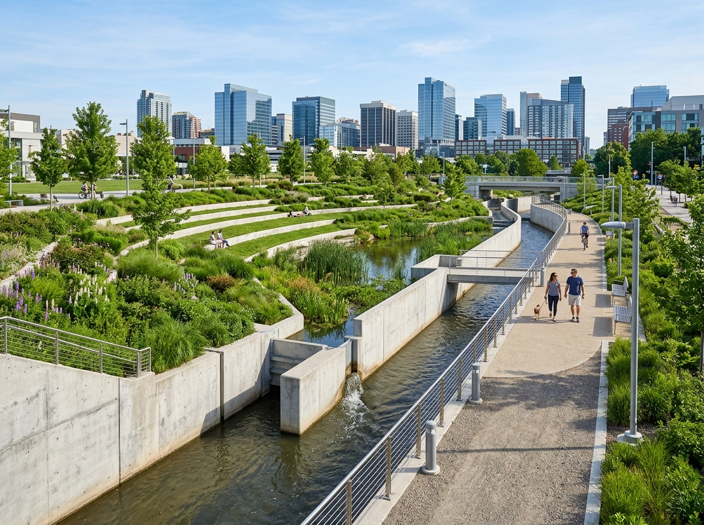
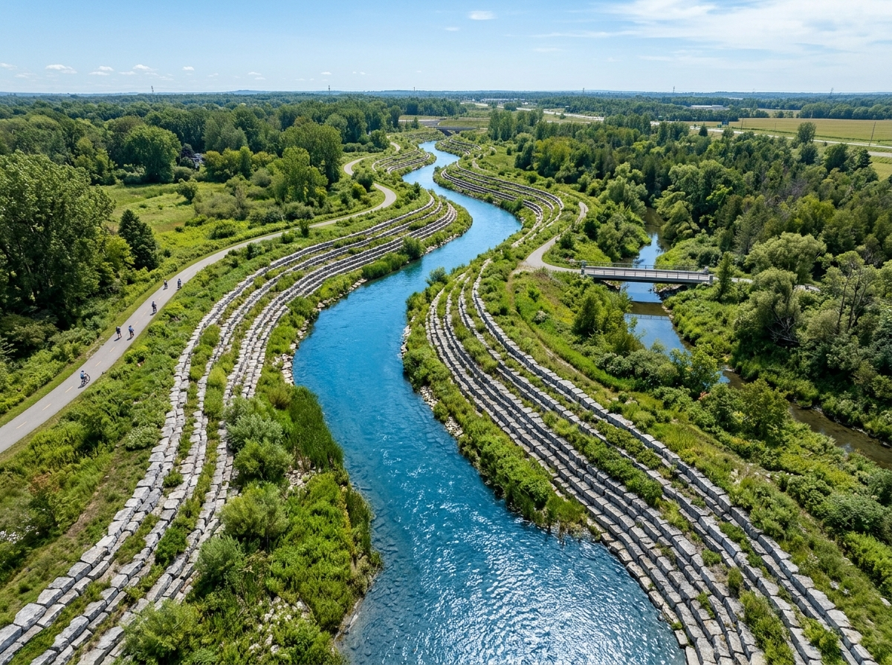
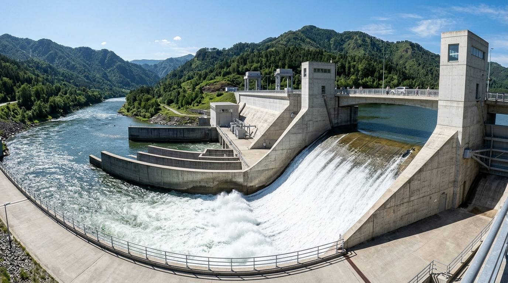

Estación de Bombeo y Conducción El Mirador
Renovación hidráulica integral de la estación impulsora principal, optimizando el punto de operación de cinco grupos de bombeo y reduciendo sobrepresiones en la línea de impulsión.

Portafolio de Obra e Ingeniería
Cada intervención documenta parámetros de caudal, normativa aplicada y mejoras verificadas en eficiencia energética y seguridad hídrica.

Renovación hidráulica integral de la estación impulsora principal, optimizando el punto de operación de cinco grupos de bombeo y reduciendo sobrepresiones en la línea de impulsión.

Diseño de una red combinada de canales revestidos y parques inundables de retención que atenúan los picos de tormenta e integran infraestructura verde en el tejido urbano.

Encauzamiento fluvial y protección de riberas mediante banquetas escalonadas de enrocado pesado combinadas con bioingeniería de taludes para preservar el ecosistema ripario.

Ingeniería de detalle del aliviadero de perfil Creager y cuenco amortiguador tipo USBR para garantizar la evacuación segura de avenidas máximas probables.
Cobertura Sectorial
Redes de agua potable, sectorización hidrométrica y estaciones de bombeo.
Bocatomas, reservorios reguladores, filtración automática y conducción presurizada.
Manejo de aguas de contacto, presas de regulación y líneas de impulsión de alta presión.
Estudios de socavación, drenaje longitudinal, alcantarillas y defensas ribereñas.